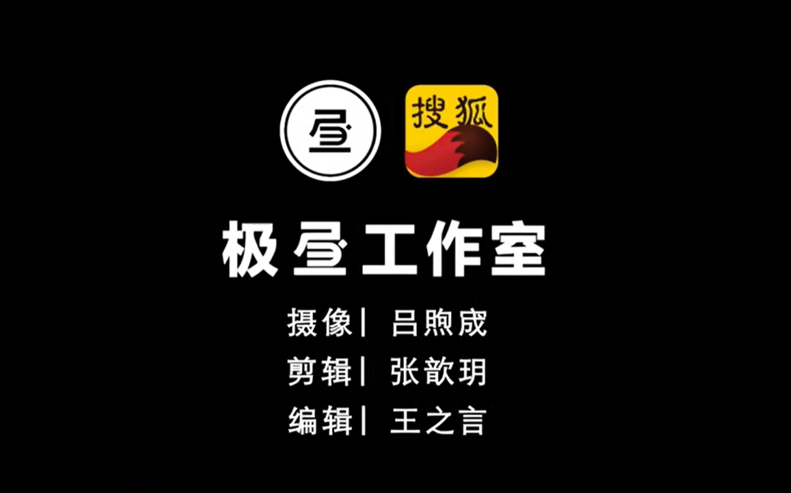
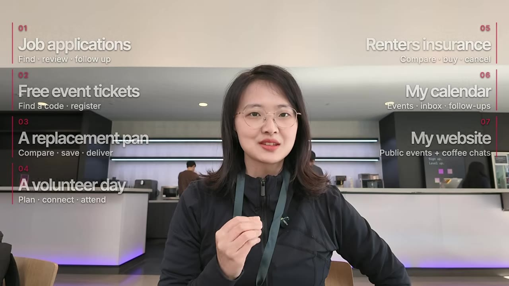

In response someone has recently invented an “anti-distillation.skill” that has gone viral on GitHub.
— Steve Hou (@stevehou) 2026 年 4 月 4 日
Anti-Distill Skill / Social Coding
科技不人本进步无意义
邓小闲 Koki，反蒸馏 Skill 作者，社会派编程发起人。中国政法大学法学本硕，日本同志社大学法学修士。长期活跃在 AI 人文、劳动者权益、女性科技、法律科技等领域，主张用人工智能解决真实的社会问题。
10 万+ 全网关注
2,400+ GitHub stars
20+ 媒体报道
Anti-Distill Skill
反蒸馏 Skill
一个把“劳动者被 AI 蒸馏”说清楚、并做成可用工具的项目：公司让你交出 Skill 时，它帮你保留真正的判断力、踩坑经验和职业资产。
Skill Demo
公司让你写 Skill？核心知识留给自己。
它受到“同事 Skill”现象启发：越来越多公司要求员工把个人经验写成可复用的 AI Skill。表面是知识沉淀，实质是把人的判断力、踩坑经验和隐性网络蒸馏成公司可复制的资产。
-
01
读取 导入你写好的 Skill 或知识文档，先保留原始结构。
-
02
识别 判断哪些内容是真正的经验、直觉、关系和踩坑记录。
-
03
分离 交差版看起来完整专业，核心知识则进入你的私人备份。
2,400+GitHub stars
Impact & Media
影响力与媒体报道
从财新封面到全球科技媒体，再到中文公共讨论，反蒸馏 Skill 把“员工经验被 AI 蒸馏”这件事推到了更大的现场。
Caixin Weekly
封面报道｜“反蒸馏”之战
《财新周刊》把“反蒸馏”作为 AI 替代加速下劳动者处境的一条关键线索，封面视觉也成为这场讨论的公共符号。





Silicon Valley Legal Tech Frontier
硅谷法律科技
前沿社区
作为 APAC Lead，深度参与搭建覆盖硅谷、东京、北京、上海、香港的法律科技社区运营体系，连接法律人、AI 工程师、创业者与资本，倡导并实践 AI Native Law Firm。
Hosted by Koki
OpenDesign 线下活动
Koki 主持的三场 OpenDesign 线下活动：从香港、上海到大阪，和不同领域的参与者一起动手做演示文稿、网站和原型，交流各自的实践。


Insights
洞察
邓小闲 Koki 关于 AI 用户权利、平台生态中的商业机会，以及法律职业变化的文章与演讲。

Muse 怎么用：7 个工作与生活的真实案例
投简历、免费拿活动票、买平底锅、安排志愿者日、租房保险、日历管理、个人网站自动更新：私人 AI 助理的 7 个真实用法。
AI 权利宣言：反抗 Claude 暴政，AI 属于人民！
在 WAIC 期间 AI Now 活动上的演讲实录：选择、拒绝、被记住和修改——AI 用户应当拥有的四项权利。

如何在 Anti-Anthropic 中找到商机？
从反向需求、平台摩擦与新工作流切入，判断 AI 生态里真正会长出商业机会的地方。

一个时代的落幕：当 LLM 不再被优先翻译为法学硕士，而是大语言模型
从法学背景进入 AI 现场，记录一个缩写的语义迁移，也记录法律人必须重新理解技术的时刻。
AI 资料库AI 资料库：给 Builder 的实时工具与指南
我平时会推荐给 AI Builder 的资料集合：实时对比模型能力、API 价格和推理服务商的工具，外加职业、社区、政策等主题的实操指南。
Bay Area · 公开日历
我的湾区日历
我把自己在湾区的公开行程做成了一面日历墙：只有已确认的公开活动才会上墙，每天自动同步，你看到的就是我真实会出现的场合。

Coffee Chat
约我喝杯咖啡
在湾区，想聊 AI、社区或者做产品？直接在我的日历上挑一个时间。